Как читать авторский курс и нормативные материалы
Это учебные материалы, а не заключение о соответствии конкретного продукта. Организационные модели курса отделяйте от терминов стандарта: ППК в опубликованном проекте — машиночитаемый перечень, а живой реестр его версий является практикой сопровождения. Термин OSA в разных материалах имеет разный охват. Статус и обязательность нормативного документа проверяются отдельно; проект КАПО опубликован как проект первой редакции.
М01. Термины, угрозы и границы SCA OSA
Зачем этот модуль Дальше весь курс будет оперировать словами SCA, OSA, SBOM, ППК, SCS, VEX, VDR так, будто разница между ними очевидна. Она не очевидна. Этот модуль ставит точные определения, чертит границу «где заканчивается SCA и начинается OSA» и показывает, против какой именно модели угроз цепочки поставки всё это работает. Без общей терминологии аудит превращается в спор о словах.
Что внутри
Модуль отвечает на четыре вопроса и закрывает каждый отдельным файлом.
| Вопрос | Где ответ |
|---|---|
| Что значит каждый термин и чем они различаются | 01 Конспект |
| Как провести занятие по таймингу | 02 План занятия |
| Как развести термины руками на своём продукте | 03 Практическая работа |
| Как проверить понимание | 04 Контрольные вопросы |
| Что искать в проекте как аудитор | 05 Что проверять на проекте |
Граница SCA / OSA в одном взгляде

Ключевые понятия
SCA · OSA · SBOM · ППК · SCS · VEX · VDR · компонент · заимствование
Нормативная опора
ГОСТ Р 58412-2019 (модель угроз при разработке ПО, п. 5.3.2 и 5.5.1) · ГОСТ Р 56939-2024 · OWASP Top 10 A06 · CWE Top 25 · NTIA Minimum Elements for SBOM
Связь с соседними модулями
- Дальше по составу фактов: М02. SBOM и ППК
- Дальше по идентификаторам: М04. Идентификаторы
- Дальше по решениям об уязвимостях: М06. VDR/VEX
- Дальше по доверию к источнику: М08. Защита цепочки поставки и OSA
- Вверх к карте курса: М00. Ориентация
Практики, которые опираются на этот модуль
Практический результат
Слушатель умеет на любом фрагменте отчёта или SBOM сказать: это факт о составе (SCA) или утверждение о доверии к источнику (OSA), это машинный факт или человеческое решение, и какому термину из таблицы он соответствует.